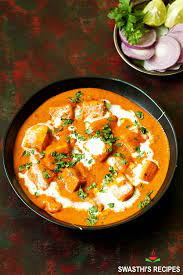

Paneer Butter Masala

Description
Paneer makhani (also called paneer butter masala) is a slightly sweet Indian dish of paneer, originating in Delhi, in which the gravy is prepared usually with butter (makhan),
tomatoes and cashews. Spices such as red chili powder and garam masala are also used to prepare this gravy.
A survey found that paneer butter masala was one of the top five foods ordered in India.
Ingredients
- ½ cup vegetable oil
- ½ pound paneer, cut into 1/2-inch cubes
- 2 tablespoons butter
- 2 onions, finely chopped
- 1 teaspoon ginger paste
- 1 teaspoon garlic paste
- 1 tablespoon ground cashews
- 1 teaspoon ground red chiles
- ½ teaspoon ground cumin
- ½ teaspoon ground coriander
- ½ teaspoon garam masala
- 1 (8 ounce) can tomato sauce
- ½ cup half-and-half
- ½ cup milk
- ½ teaspoon white sugar
- ½ teaspoon salt